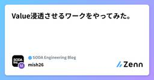
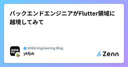
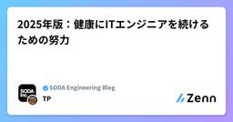
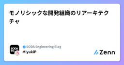
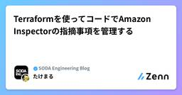
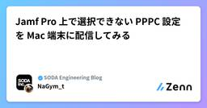
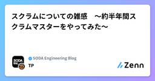

SODA Engineering Blogのフィード
https://zenn.dev/p/team_soda
株式会社SODAの開発組織がお届けするZenn Publicationです。 是非Entrance Bookもご覧ください！ → https://recruit.soda-inc.jp/engineer
フィード

Value浸透させるワークをやってみた。
SODA Engineering Blogのフィード
はじめに私たちは「世界中が熱狂する次のマーケットプレイスをつくる」というMissionを掲げています。このMissionを実現するためには、個々のスキルや努力も大事なのですが、組織として、どんな価値観・行動基準(Value)で動くのかが揃っていることも不可欠です。そんな中、2025年5月にSODAではValueがアップデートされました。「どう考え、どう行動する組織でありたいか」が明確に言語化されています。※記事についてはこちら➔https://soda-inc.jp/news/20250610_valueValueは掲げるだけでなく、体現してこそ価値があります。...
1時間前

バックエンドエンジニアがFlutter領域に越境してみて
SODA Engineering Blogのフィード
!SNKRDUNK(スニダン)を開発しているSODA inc.の Advent Calendar 2025Advent Calendar 2025 13日目の記事です。 導入昨今、Claude Code や Cursor のような生成 AI ツールが一気に普及し、コードリーディングや実装の難易度は以前と比べてだいぶ下がったと感じています。自分の得意領域であるバックエンドだけでなく、モバイルアプリや Web フロントエンドのような、これまでちょっと遠いなと感じていた領域にも、AI に手を引いてもらいながら踏み込めるようになりました。前置きというか前提として自分は現在バックエン...
1日前

2025年版：健康にITエンジニアを続けるための努力
SODA Engineering Blogのフィード
!SNKRDUNK(スニダン)を開発しているSODA inc.の Advent Calendar 2025 12日目の記事です。こんにちは。株式会社SODAでFlutterエンジニアとエンジニアリングマネージャーをしているTPと申します。私は先日30歳の誕生日を迎え、ITエンジニアとしてのキャリアも7年ほどになりました。節目の歳ということもあり、何となく健康について語りたくなったので書いていきます。ITエンジニアはパソコンの前に座る時間が長く、そのことによって健康問題を抱えやすい職業ではないかと思います。私もこれまでのキャリアで好不調の波を感じており、不調になるたびに何らかの対...
2日前

モノリシックな開発組織のリアーキテクチャ
SODA Engineering Blogのフィード
＼スニダンを開発しているSODA inc.の Advent Calendar 2025 10日目の記事です!!!／SODAでリードEMをしているmiyukiです。今日は開発組織の話をしようと思います。コードベースのリアーキテクチャの話はよく聞きますが、開発組織のリアーキテクチャはあまり聞くことがないと思うので、弊社において移行中の事例や設計について紹介していこうと思います。 背景と課題組織のリアーキテクチャについて話す前に、開発組織の背景や課題について説明します。 1. AIエージェントの台頭今年は「AIエージェント元年」としてAIによる開発に目覚ましい発展がありました...
4日前

Terraformを使ってコードでAmazon Inspectorの指摘事項を管理する
SODA Engineering Blogのフィード
!SNKRDUNK(スニダン)を開発しているSODA inc.の Advent Calendar 2025 9日目の記事です。こんにちは、SODAでセキュリティエンジニアとして働いている小竹です。推しSODAはコカコーラゼロとカロリミット アップルスパークリングです。どちらもオフィスの自販機で売っています。Amazon Inspectorの通知運用、うまくいっていますか？「有効化したものの通知が鳴り止まず、結局誰も見なくなった」……いわゆる「アラート疲弊（Alert Fatigue）」に陥っていないでしょうか。今回は、2025年5月16日にリリースされたTerraform AW...
4日前

Jamf Pro 上で選択できない PPPC 設定を Mac 端末に配信してみる
SODA Engineering Blogのフィード
はじめにおはこんばんちはなら！みなさんセキュリティしてますか？どうも NaGym_t です。私は SODA のセキュリティ担当として、弊社のプロダクトである SNKRDUNK や情シスとして社内の端末やネットワークのセキュリティを担当しています。今回は情シス的な業務の面でのやってみた系の記事です。弊社では Mac 端末の管理に Jamf Pro (以下、Jamf) を採用しています。基本的な設定を Jamf で管理することにより、セキュリティ設定の平準化、設定変更を行う場合の一括配信を実現しています。しかし、Mac の機能リリースも多いことから、すべての設定を Jamf で即日...
6日前

スクラムについての雑感 〜約半年間スクラムマスターをやってみた〜
SODA Engineering Blogのフィード
!SNKRDUNK(スニダン)を開発しているSODA inc.の Advent Calendar 2025 7日目の記事です。こんにちは。TPです。今年の初めから株式会社SODAにFlutterエンジニアとして参画し、5月ごろからスクラムマスターをやっておりました。自分にとってスクラムマスターを担うのは初めての経験になります。この記事では、約半年程度スクラムマスターとして業務する中で、スクラムについて考えたことをざっくばらんに書き連ねていきます。自分はまだまだスクラムマスターおよびスクラムの実践者として新米なので、変なことも書いてしまっていると思います。しかし、現時点での考え...
7日前

プロダクト組織で起きた2025年のパラダイムシフトと「全員Product Maker」への道
SODA Engineering Blogのフィード
＼スニダンを開発しているSODA inc.の Advent Calendar 2025 6日目の記事です!!!／ はじめにSODAでCOOとしてプロダクト部門とマーケティング部門を統括している@kjです。2024/12に入社してちょうど一年が経ちました。2024年末と2025年末。たった1年の差ですが、プロダクト開発の現場、そしてSODAという組織の景色は劇的に変わりました。今年は明確に「AIの実用化」が進歩した年でした。SODAでは新しいツールが出れば即座に試し、実務に組み込む体制を構築していますが、このスピード感についてくること自体がひとつの才能と言えるほど、変化の激しい...
8日前

QAEがflakyテストを修正する意味
SODA Engineering Blogのフィード
こんにちは！SODA社QAエンジニアのmachiです！今日はQAエンジニア（以下、QAE）がflakyテストを修正するに至った意図や、その活動内容をお話ししたいと思います。※"flakyテスト"という言葉は、世の中に数多くの記事やお話があるのでそれ自体の説明は割愛します。本記事は弊社VPoTの発表を受けての記事でもあります。https://speakerdeck.com/rinchsan/qaekasheng-cheng-aitoyue-eru-sohutoueakai-fa-nojing-jie-xian Whyから考えるたまに投げかけられる疑問にこのようなものがありま...
8日前
MagicPod Autopilot を使ってみた（SODA編）
SODA Engineering Blogのフィード
＼スニダンを開発しているSODA inc.の Advent Calendar 2025 5日目の記事です!!!／＼MagicPod Advent Calendar 2025 5日目の記事です!!!／＼オカウチワニが1人でやっている okauchiwani-hitori Advent Calendar 2025 5日目の記事です!!!／こんにちは、SODAでQAエンジニアをしているokauchiです。今回はMagicPodで新しく提供されたAutopilotを触ってみた話を書いていきます。公式サポートの記事を読みつつ実際に試して感じた部分や、どのようなタイミングで有効そうかも解説を...
9日前
深い開発
SODA Engineering Blogのフィード
SNKRDUNK(スニダン)を開発しているSODA inc.の Advent Calendar 2025 4日目の記事です。 単なる作業ではない開発「深い開発」について世の中では往々にして「開発（実装）」という工程が軽視されがちだ。「上流工程で決まった設計図を、コードに翻訳するだけの単純作業」と捉えられることがある。そういった単純作業としての開発もあるのだろうが、全ての開発がそうではない。私はここで「深い開発」という概念を提唱したい。深い開発とは単純作業としての開発の対立概念である。優れた設計は、コードを書いてシステムと対話するプロセスの中から創発されるものであり、それに欠かせな...
10日前
越境文化は越境"される側"が土壌を作ればうまくいく
SODA Engineering Blogのフィード
!SNKRDUNK(スニダン)を開発しているSODA inc.の Advent Calendar 2025 3日目の記事です。生成AIで領域の越境はしやすくなっているのでしょうか?スキルの幅は広がっているのでしょうか?正直、多少しやすくはなってますがまだハードルが高いと思っています。(個人開発で雰囲気で書くとかは別として)SODAではFlutterへの領域越境が元々0人だったところから半年で12人に増えました。 そのおかげで施策スピード・リファクタが加速しています。越境をしてもらうために、Flutterチーム全員で越境"される側"が土壌を作ることで組織の越境文化を加速させて...
11日前
Turborepo と Bun で作る快適フロントエンド基盤
SODA Engineering Blogのフィード
＼スニダンを開発しているSODA inc.の Advent Calendar 2025 1日目の記事です!!!／こんにちは。Frontend Rebirth（フロントエンドを再構築していく） チームの Maple です。今回は、私たちのプロジェクトで検証中の Next.js × Turborepo × Bun という構成についてご紹介したいと思います。「モノレポ構成に興味はあるけれど、設定が複雑そう」「Bun を実戦投入するのはまだ早いかな？」そんな風に迷われている方の参考になれば幸いです。 なぜこの構成を選んだのかもともと私たちのプロジェクトでは、1つの Next.js ...
13日前
みんなでDevin開発の現在地
SODA Engineering Blogのフィード
はじめに弊社ではカスタマーサポート、ロジスティクス、メディアなど開発部署以外のメンバーがDevinを活用してプロダクト開発を行っている点が特徴です。この記事では実施している開発フロー、実績と現時点での限界と課題、過去の課題を説明します。 Devinを用いた開発フロー開発フローはシンプルで、以下の手順に沿って進めています。各工程を説明します。 1. PRDの作成各部署のメンバーがPRD(Product Requirements Document)[1]を作成します。PRD作成はDevinのAsk Devinという機能を使用して行っています。PRD作成までの簡易的な...
17日前
JSConf JP 2025 登壇レポート
SODA Engineering Blogのフィード
こんにちは。Frontend Rebirth（フロントエンドを再構築していく） チームの Maple です。先日開催された JSConf JP 2025 にて、「モダンJSフレームワークのビルドプロセス 〜なぜReactは503行、Svelteは12行なのか〜」というタイトルで登壇させていただきました！この記事では、発表内容のハイライトと、登壇を通じて感じたことや学びを共有させていただきます。 登壇情報https://jsconf.jp/2025/en/talks/modern-js-framework-build-process 発表資料 発表内容今回の発表では、...
19日前
SNKRDUNKにおける機械学習への取り組みの現状と今後の展望
SODA Engineering Blogのフィード
はじめに株式会社SODAでバックエンドのテックリードをしている仲宗根です。SODAは、SNKRDUNKというスニーカーやアパレル、トレーディングカード(トレカ)のフリマサービスを運営しています。本記事では、SNKRDUNKにおける機械学習プロジェクトの一例として、ピックアップリンクのパーソナライズを紹介します。この取り組みを通して、SNKRDUNKの開発に興味を持っていただければ幸いです。 ピックアップリンクとはピックアップリンクとは、SNKRDUNKアプリのおすすめタブの上部に配置された特定のカテゴリーやブランドごとにまとめられた商品へのリンクのことです（図1）。リン...
1ヶ月前
ブランチごとにDEV環境を動的生成！ALB で実現するプレビュー環境
SODA Engineering Blogのフィード
はじめにこんにちは。Frontend Rebirth（フロントエンドを再構築していく） チームの Maple です。開発チームで「DEV環境が1つしかない」という状況、経験ありませんか？私たちのチームでは、複数の機能を並行開発する中で、単一のDEV環境を共有していたことによる様々な問題に直面していました。!本記事では、この課題をAWS ALBのListener Rules、ECS、GitHub Actionsを組み合わせることで解決し、ブランチごとに独立したDEV環境を動的に構築する仕組みを実現した事例を紹介します。!現状は以下の記事などで記載しているリプレイス後の新...
2ヶ月前
Go Conference 2025 参加レポート - Go言語の最新トレンドを体感してきた2日間
SODA Engineering Blogのフィード
はじめに2025年9月27日と28日の2日間、東京・渋谷のAbema Towersで開催されたGo Conference 2025に参加してきました！SODAはシルバースポンサーとして、協賛しているので、ブース出展のメンバーが入場できるのですが、そのメンバーは2名のみ入場できるとのことなので、お手伝いとして入場するkazuと22skyyは一般のチケットで入場することになりました！スポンサーとしての出展についてはこちらの記事で書かれているので、今回は、kazuと22skyyの二人がスポンサーブースのお手伝いの合間に参加してきたワークショップとセッションについて、書いていこうと...
2ヶ月前
より良いユーザー体験を求めて "モーダル" を深掘る
SODA Engineering Blogのフィード
モーダルと聞いてどんなUIを想像しますか?iOSを使ってる人はこのようなUIを想像するのではないでしょうか。(iOS26では見た目が変わりましたね)実はモーダルというUIコンポーネントは存在しません。このようなUIはHIGではシートと呼んでいます。では「モーダル」は本来どう言う時に使えば良いのでしょうか?この記事ではモーダルが表すUIについて種類や実装方法などを深掘り、より良いユーザー体験を実現する方法を見ていきます。読者対象は、Flutterエンジニアはもちろん、モバイルエンジニア全般やFデザイナーにも読んでもらいたいです。 モーダルとは「モーダル」というのは、ユー...
2ヶ月前
Go Conference 2025でLT登壇してきました！
SODA Engineering Blogのフィード
こんにちは。SODAのmagavelです。先日(9/27〜28)開催されたGo Conference 2025で登壇の機会をいただき、LTスピーカーとして参加してきたので、発表内容の振り返りと感想を書いておこうと思います！ weak pointerについて話しましたhttps://gocon.jp/2025/talks/959089/LTではGo1.24で追加されたweakパッケージについて、weak pointerの概念から使い所、導入の背景を中心に、実際の使用例を少し交えて発表させていただきました。聞き手は↓のような方々を想定しつつ、weak pointerの概念を...
2ヶ月前